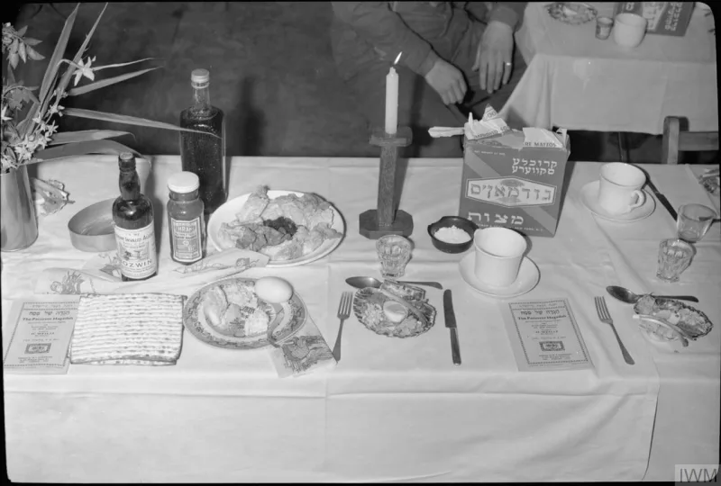

The Watchtower's own publications admit these facts. You can make this point from their library alone.
Once a year Witnesses hold the Memorial of Christ's death. It is their most important meeting.
The bread and the wine are passed along the rows. Almost everyone present declines to touch them.
Only those who profess to be of the anointed 144,000 partake.
For the 2024 service year they published both figures. Memorial attendance worldwide was 21,119,442.
Partakers numbered 23,212. That is about 0.11%.
In 2025 it was roughly 20.5 million attending and about 24,600 partaking.
His words were commands to everyone there. "Take, eat...
Drink out of it, all of you" (Matthew 26:26-27). Paul passes on "keep doing this in remembrance of me" to the whole church at Corinth (1 Corinthians 11:23-26).
And Jesus set the stakes: "Unless you eat the flesh of the Son of man and drink his blood, you have no life in yourselves" (John 6:53, in their own Bible).
The new covenant was made with those who will rule with Christ. Luke 22:28-30 ties the meal to a covenant for a kingdom.
So the emblems belong to those in the covenant. The great crowd benefits from the ransom without being party to the covenant, as non-Levites benefited from arrangements they did not run.
"All of you" was said to the eleven apostles, who were all future kings, not to a mixed crowd. John 6, they say, means exercising faith in the ransom, which the great crowd does.
They admit this themselves, and they publish the count. The covenant defense is their best, but it assumes the two-class system it is meant to prove.
It cannot explain why John 6:53 ties life itself to the very act that 99.9% are told to decline.
"When the bread comes past you, what goes through your mind?"

The emblems belong to those in the new covenant, who will rule with Christ.
Witnesses respond that the new covenant was made with those who will rule with Christ. Luke 22:28-30 links the meal to a covenant for a kingdom. So the emblems belong to covenant participants only.
The great crowd benefits from the ransom without being party to the covenant. Non-Levites benefited in the same way from arrangements they did not administer. 'Drink out of it, all of you' addressed the eleven apostles, who were all prospective kingdom heirs, and not a mixed crowd. John 6 they read as exercising faith in the ransom, which the great crowd does.
They admit it themselves, and they publish the count: 23,212 of 21 million.
The practice and the numbers come wholly from their own publications. This is the two-class doctrine made visible and countable.
The covenant-membership defense is their best argument. But it presupposes the two-class system it is meant to support. See the two-class-salvation-system case.
It cannot explain why John 6:53 conditions life itself on the very act that 99.9% are told to abstain from. Their own NWT wording does the work here, so use it.